한 달 PR 1만 개와 되돌림 0.5%
숫자부터 볼게요. Grok Bot을 만드는 팀은 10월 한 달에 PR 10,926개를 병합했어요. 막대는 6월 809개에서 시작해 7월 1,784개, 8월 4,203개, 9월 5,648개로 매달 커지고, 왼쪽 위에는 다섯 달 누적 23,370개가 적혀 있어요. 같은 달 되돌린 커밋은 0.5% 안팎이었어요.
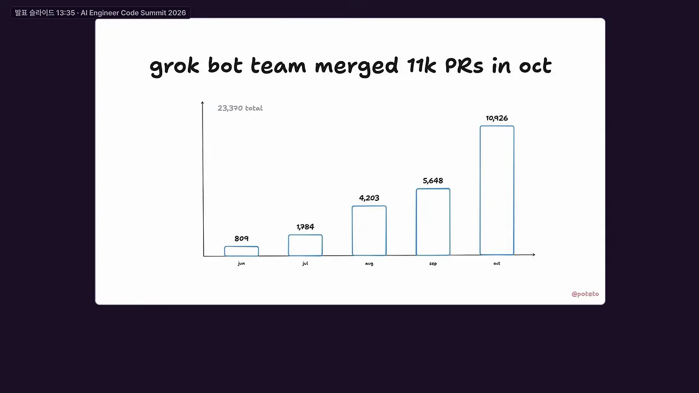
발표자는 SpaceXSI에서 Grok Bot을 만드는 엔지니어예요. 제목의 '슬롭'은 남이 쓴 코드를 보고 '다 쓰레기네' 하는 그 느낌이에요. 발표자는 그 슬롭을 금으로 바꿀 수 있다고 설득하러 나왔어요.
다음 막대그래프는 팀이 아니라 발표자 한 사람이 매달 올린 PR이에요. 3월 68개에서 시작해 8월 2,401개로 뛰고, 10월에는 3,127개예요. 발표에서는 '지난달 PR 3,000개를 프로덕션에 냈다'고 말해요.
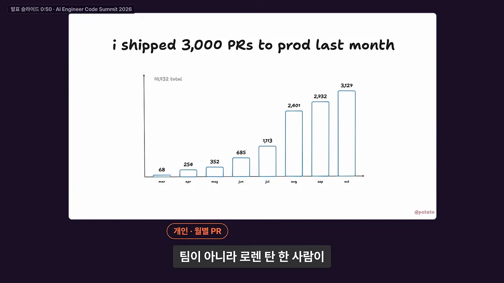
예전엔 이렇게 생산성이 튀는 사람을 '코딩 머신'이라고 불렀대요. 주말 동안 Google 지도를 다시 짠 브렛 테일러 같은 사람이요. 발표자는 이제 에이전트 덕분에 누구나 코딩 머신이 될 수 있다고 봐요. 그래서 엔지니어의 일이 바뀌었다는 게 발표의 주장이에요.
the meta of being a software engineer is figuring out how to maintain or even improve the quality of your code while massively increasing your productivity.
지금 소프트웨어 엔지니어의 일은 생산성을 크게 늘리면서도 코드 품질을 지키거나 오히려 높이는 방법을 찾는 거예요.
— 원래 발표 (이 영상 00:32 부근)
사람들은 이걸 '소프트웨어 공장'이라고 부르지만, 발표자는 '신뢰'라는 단어를 골라요. 맹목적으로 믿자는 게 아니에요. 에이전트의 환경에 투자해서, 에이전트가 옳은 일을 할 거라고 믿을 수 있게 만들자는 거예요. 발표자는 여기까지 오는 데 여섯 달이 걸렸고, 듣는 사람은 훨씬 빨리 갈 수 있을 거라고 해요.
목표는 고리 두 개로 그려져요. 왼쪽 저신뢰 고리에서는 에이전트가 슬롭을 쓰고 사람이 검증하다가 문제를 찾아요. 대부분이 여기 머물러 있대요. 오른쪽 고신뢰 고리에서는 에이전트가 좋은 코드를 쓰고 검증도 에이전트가 해요. 가운데 화살표에 표시된 칸이 이 발표가 다루는 부분이에요.
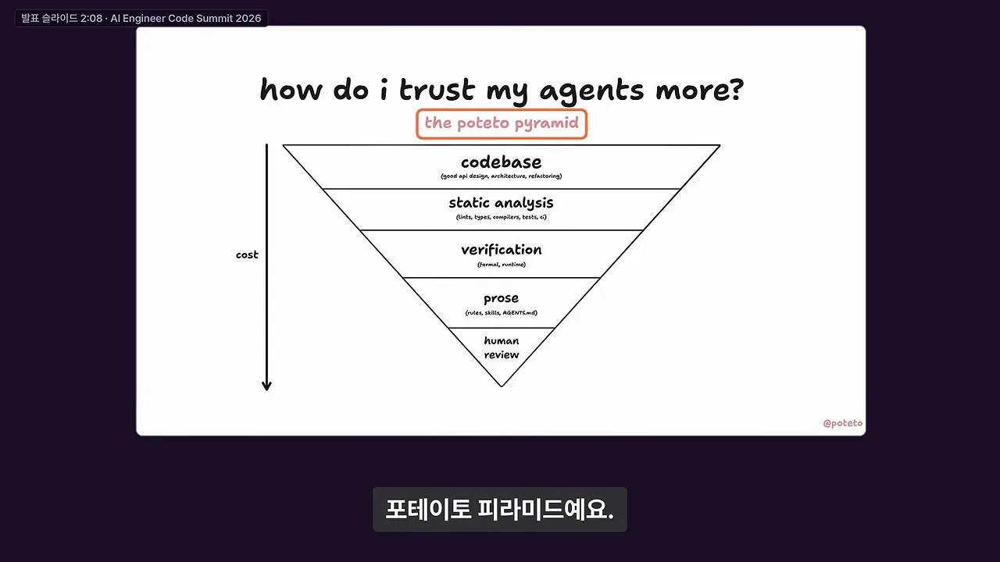
포테이토 피라미드와 정원 비유
왼쪽 고리에서 오른쪽 고리로 가려면 어디에 시간을 써야 할까요? 발표자는 거꾸로 선 삼각형 하나로 답해요. 이름은 '포테이토 피라미드'예요. 위에서부터 codebase, static analysis, verification, prose, human review 다섯 칸이고, 왼쪽 세로축에는 cost라고 적혀 있어요.
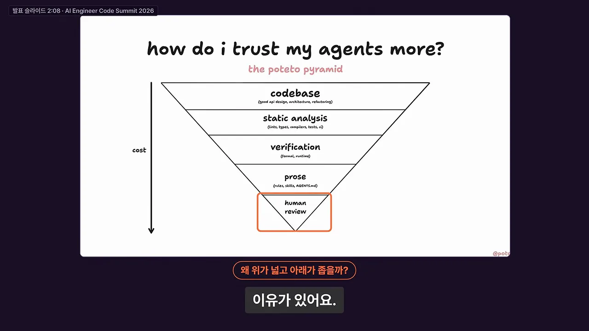
칸마다 들어가는 것을 발표 내용대로 정리하면 이래요.
| 칸 | 들어가는 것 | 성격 |
|---|---|---|
| 코드베이스 | 좋은 API 설계, 아키텍처, 리팩터링 | 결정적. 에이전트가 기본값으로 옳은 일을 하게 묶어요 |
| 정적 분석 | 린트 규칙, 타입 시스템, 컴파일러, 여러 종류의 테스트 | |
| 검증 | 런타임 검증과 형식 검증 | 버그와 불변 조건을 찾고, 에이전트가 의도를 이해했는지 확인해요 |
| 산문 | 규칙, 스킬, AGENTS.md | 판단이 필요한 것만 조금 얹어요 |
| 사람 리뷰 | — | 가장 좁은 칸 |
규칙 파일이나 스킬처럼 우리가 흔히 먼저 손대는 글은 아래쪽 좁은 칸이에요. 발표자는 가장 넓은 맨 윗칸, 코드베이스부터 내려가요.
코드베이스는 에이전트의 가장 큰 입력이에요
에이전트는 입력을 보고 출력을 만들어요. 그리고 코드베이스는 그 입력 중 가장 큰 편이에요. 그래서 발표자는 에이전트를 고칠 때마다, 규칙 파일이나 AGENTS.md에 한 줄 보태는 대신 그걸 결정적 검사로 만들 방법을 생각하래요. 코드로 되어 있어야 재현성이 높고 더 믿을 수 있어요.
여기서 나무로 뒤덮인 건물 그림이 나와요. 발표자는 코드베이스를 정원에 빗대요. 2024년엔 출근해서 동료가 쓴 PR 3개를 리뷰했는데, 지금은 300개쯤이래요. 코드가 거의 끊임없는 흐름처럼 들어오니 살아 있는 것처럼 느껴진대요. 그림 속 콘크리트 건물이 우리가 세운 제약과 가드레일이고, 에이전트가 쓴 새 코드는 그 둘레로 자라는 나무예요.
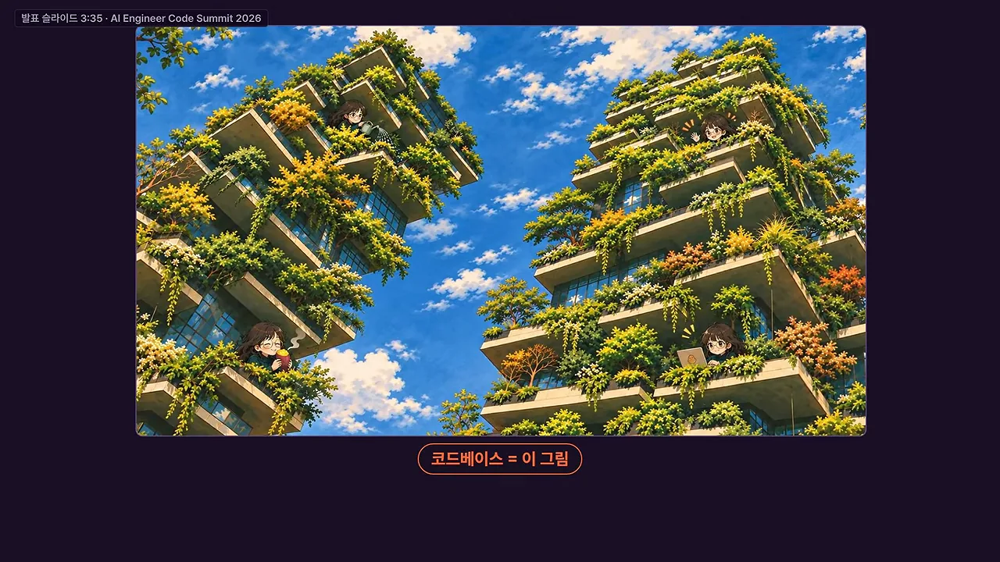
이 비유는 거꾸로도 작동해요. 땜질, 안티패턴, 폐기된 코드, 기술 부채도 다음 에이전트가 베껴요. 코드베이스에 있으니 '확립된 패턴'처럼 보이거든요. 슬라이드는 이걸 잡초가 땅속 뿌리로 번지는 그림으로 보여 줘요. 왼쪽 one workaround 하나가 copy, copy, copy를 거쳐 오른쪽 끝에서는 the pattern이 돼요.
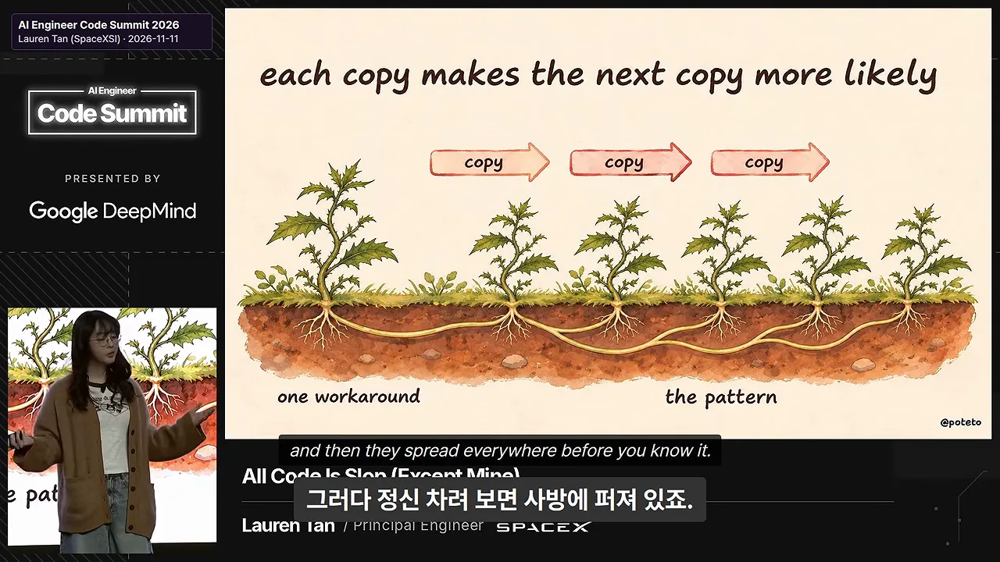
Dune: 코드베이스에 제약을 박아 넣기
그럼 실제로는 어떻게 막았을까요? 팀은 Grok Bot을 만들면서 Dune이라는 클라이언트 프레임워크를 직접 만들었어요. 발표자 말로는 기술적으로 흥미로운 건 없고, 'Electron 앱용 Next.js' 정도로 보면 된대요. 흥미로운 건 데스크톱 앱을 만들며 배운 교훈을 제약과 린트 규칙으로 담아 뒀다는 점이에요.
슬라이드 왼쪽 상자가 앱 프레임워크(내비게이션, 렌더링, IPC(Inter-Process Communication))이고, 오른쪽에 세 가지가 더해져요. 기능마다 폴더 하나, 엄격한 import 금지, 코드 안 주석 금지예요. 이 절은 앞의 둘을, 다음 절은 주석을 다뤄요.
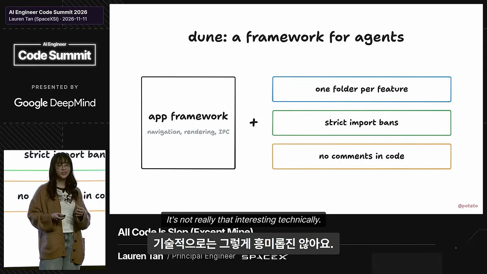
까다로운 기능은 아예 못 쓰게 했어요
첫 번째 교훈은 슬라이드 제목 그대로 'nuance tends to lead to slop', 미묘한 판단이 필요한 건 슬롭으로 이어진다는 거예요. 아래에 작게 'just design better APIs'라고 적혀 있어요. 대표 예가 React의 useEffect예요. 쓸 데는 있지만 자주 잘못 쓰여서, 제대로 쓰려면 박사 학위가 필요하다는 농담까지 있대요. 에이전트도 잘 못 써요.
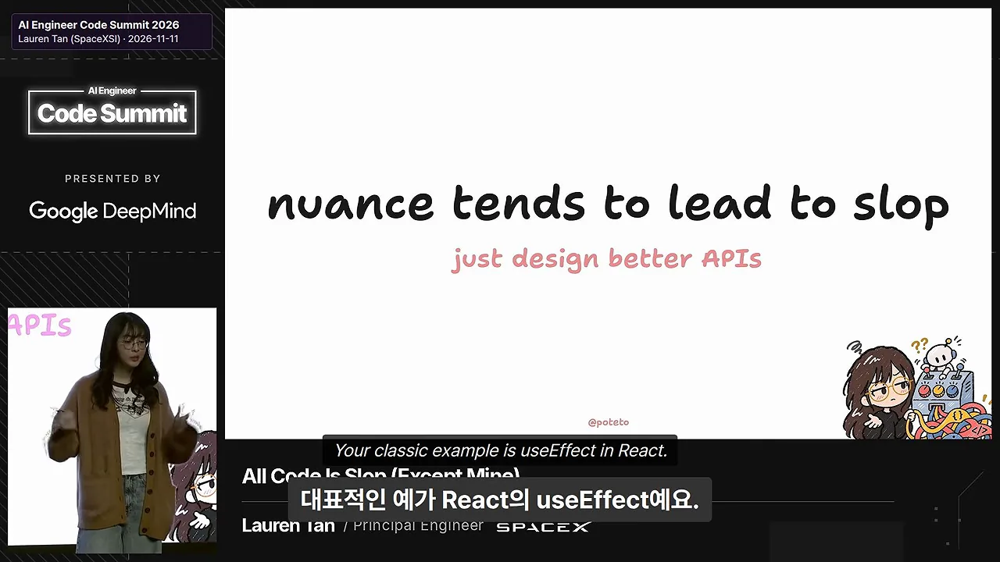
그래서 팀은 제품 코드에서 useEffect를 아예 금지했어요. Dune API 안의 몇 군데에서만 허용해요. 발표자는 이 문제가 '범주째 사라졌다'고 표현해요. 리뷰에서 다시 잡아낼 일이 없어진 거예요.
디렉터리 구조도 맥락이에요
두 번째 교훈은 폴더 구조로 맥락을 주는 거예요. 발표자의 예전 회사 Cursor는 Electron 앱인데, 에이전트가 메인 스레드 코드를 렌더러 스레드로 import하는 일이 잦았대요. 그러면 긴 작업이 생기고 화면이 버벅여요. 백엔드로 치면 서로 다른 프로세스에서 도는 모듈끼리 가져다 쓰는 것과 비슷해요.
Dune에서는 이걸 아주 뻔한 관례로 만들었어요. 슬라이드 위쪽을 보면 최상위 폴더가 말 그대로 electron-renderer/와 electron-main/이에요. 둘 사이 점선에 ✕가 있고 not even types, 즉 타입조차 넘나들 수 없어요. 함께 쓸 타입은 가운데 shared/에만 둬요. 이 경계는 의존성 그래프 분석기와 린트 규칙 몇 개가 지켜요.
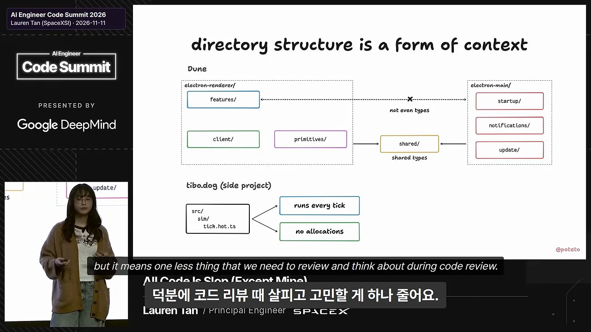
아래쪽은 발표자의 사이드 프로젝트 tibo.dog 예시예요. tick.hot.ts라는 파일 이름이 '매 틱마다 돈다'와 '메모리 할당 금지'라는 두 맥락을 동시에 줘요. 이런 린트 규칙은 만들기 쉽지만, 리뷰에서 살필 게 하나 줄어든다는 점이 중요해요. 겉보기엔 다른 두 예시가 여기서 만나요. 까다로운 건 못 쓰게 했고, 섞이면 안 되는 건 폴더와 린트로 갈라서, 둘 다 리뷰에서 볼 일이 없어졌어요.
주석을 99% 없앤 이유
발표자가 놀랐다는 장면이 하나 더 있어요. 에이전트가 문서, 코드 주석, 규칙, 스킬 같은 마크다운을 '옳은 일을 하지 않은 핑계'를 적는 곳으로 쓴다는 거예요. 작은 교정 하나를 과하게 받아들여서, 다시는 깨면 안 되는 규칙처럼 다루기도 해요. 슬라이드 제목은 'stop agents from writing unsolicited markdown'이에요.
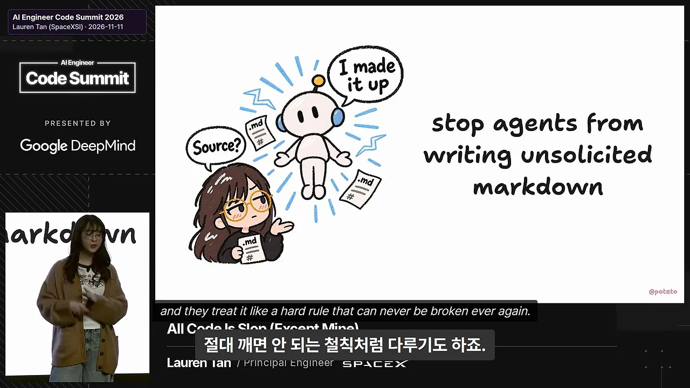
땜질 한 줄이 타이머 183개가 되기까지
예시는 Cursor에서 있었던 일이에요. 에이전트들은 setTimeout, requestAnimationFrame, requestIdleCallback 같은 명령형 타이머를 빠른 땜질로 즐겨 썼어요. 사실 이건 VS Code의 명령형 스타일과 React의 선언형 스타일이 부딪히는 걸 덮는 땜질이었어요. 슬라이드에는 날짜 세 개가 차례로 나와요.
- 9월 9일: 화면 깜빡임을 고치려고
setTimeout(() => release(id), 0)한 줄을 넣었어요. 위에는 '나중에 해제, 다시 올 수도 있으니까'라는 주석이 붙어 있고, 에이전트는 '제대로 고치면 더 큰 변경이 된다'고 했어요. - 10월 3일: 그 코드가 공유 모듈로 복사됐어요.
- 10월 17일: 타이머가 183개가 됐어요.
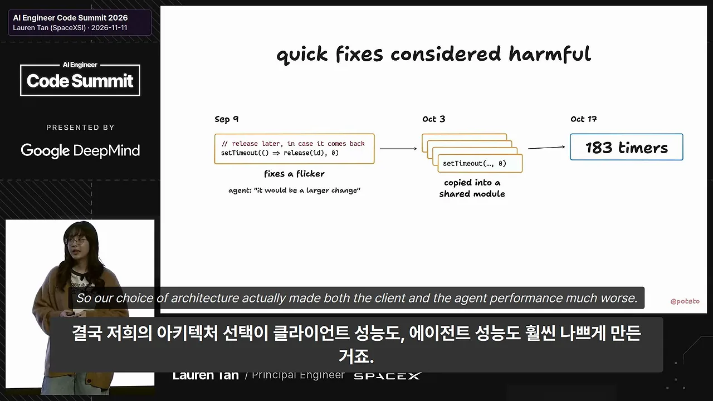
JavaScript에서 타이머가 빠르게 만들어지고 사라지면 메이저 가비지 컬렉션이 자주 일어나서 렉과 버벅임이 생겨요. 결국 그 아키텍처 선택이 클라이언트 성능도, 에이전트 성능도 훨씬 나쁘게 만들었어요. 가장 나빴던 건 에이전트가 '왜 이 땜질이 정당한지'를 주석으로 잔뜩 달았다는 점이에요.
주석 99% 금지
그래서 Grok Bot에서는 주석의 99%를 그냥 금지했어요. 슬라이드 제목은 'comments are liabilities', 주석은 부채라는 뜻이에요. 빨간 막대는 7월 31일 65,824개, 초록 막대는 지금 1,227개예요. 아래에는 pstack의 /no-comments도 보라는 안내가 있어요.
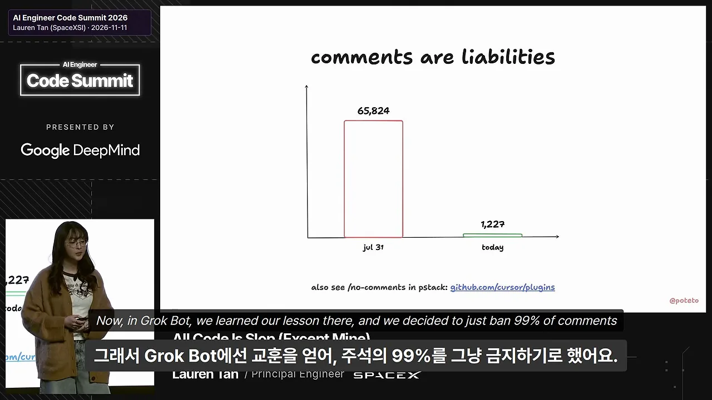
발표자가 드는 이유는 넷이에요.
- 금방 낡아요.
- 사람은 어차피 주석을 잘 안 읽어요.
- 어려운 일을 피하는 에이전트에게 정당화할 탈출구를 줘요.
- 가장 나쁜 점은 강제할 수 없다는 거예요. '다음 에이전트한테 이건 하지 말라고 적어 두자'는 좋은 의도가 믿을 만한 장치로 이어지지 않아요.
대신 Grok Bot과 Dune에는 린트 규칙이 있어요. 에러 메시지가 친절해서, 땜질로 돌아가지 말고 근본 원인을 고치라고 에이전트에게 알려 줘요.
교정할 때마다 결정적 검사 하나
여기서 발표 전체를 꿰는 원칙이 나와요.
every time we correct our agents, it turns into one of these deterministic checks
에이전트를 교정할 때마다 그게 이런 결정적 검사 하나가 되게 해요.
— 원래 발표 (이 영상 11:14 부근)
아니면 더 나은 API 설계와 아키텍처로 그 문제를 범주째 없앨 방법을 생각해요. 계단 모양 그래프가 그렇게 쌓인 결과예요. 축 이름은 없지만, 7월 1일 이후 계단이 7, 17, 38, 90, 139, 149, 157, 167로 올라가요. 9월 1일 무렵 90에서 139로 가장 크게 뛰어요.
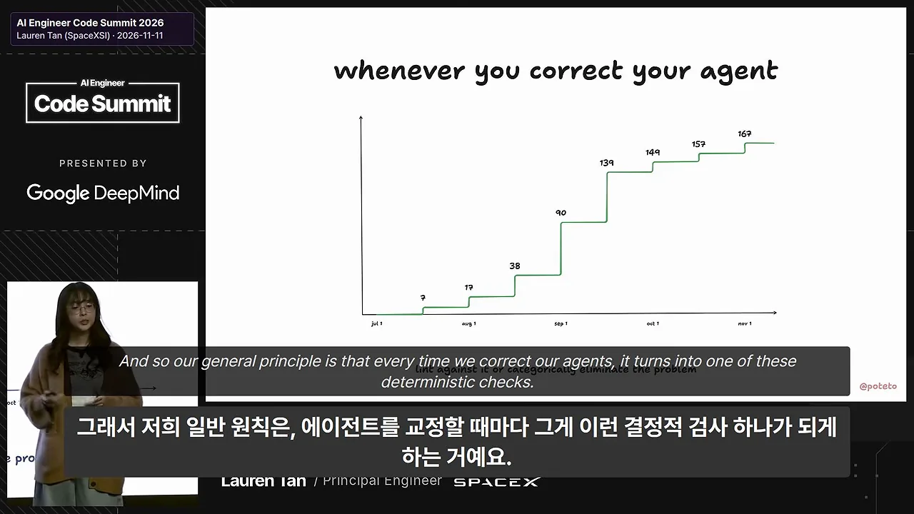
이걸 충분히 반복하면 코드 리뷰에서 살필 게 점점 줄어요. 어느 순간 리뷰할 게 거의 남지 않고, 에이전트가 PR 대부분을 스스로 병합하게 둘 수 있다는 게 발표자의 경험이에요. 피라미드로 치면 여기까지가 위쪽 두 칸, 코드베이스와 정적 분석이에요.
가장 중요한 칸, 검증
발표자가 '가장 중요한 단계'라고 부르는 건 피라미드의 세 번째 칸, 검증이에요. 검증은 에이전트를 더 자율적으로 만들고, 그 결과물을 믿게 해 줘요. 그래서 팀의 코드 리뷰는 이제 대부분 검증 산출물을 보는 일로 줄었어요.
런타임 검증: 에이전트가 앱을 직접 돌려요
가장 기본은 런타임 검증이에요. 에이전트가 코드를 직접 실행하고, Chrome DevTools Protocol처럼 사람 개발자가 쓰는 디버깅 도구도 쓰게 하는 거예요. 슬라이드는 두 부품을 더해요.
- 왼쪽 feature map: 동그라미가 가지를 치는 그림 아래에 what features exist, how users reach it, what proves it works가 적혀 있어요. 어떤 기능이 있고, 사용자가 어떻게 가고, 무엇으로 동작을 증명하는지예요. 팀은 이걸 피처 맵이라고 불러요. 사용자 관점의 사이트맵이라, '왼쪽 사이드바의 그거'라고 말해도 에이전트가 추측할 필요가 없어요.
- 오른쪽 CLI(Command-Line Interface): 스킬 안에 전용 CLI를 둬서 에이전트가 매번 같은 CLI와 드라이버를 재사용해요. 토큰을 아끼고, CLI 자체도 테스트할 수 있어요.
오른쪽 상자의 명령 세 줄을 보면, 설정 버튼을 접근성 이름으로 누르고, 화면 상태를 찍고, 스크린샷을 proof.png라는 증거 파일로 남겨요.
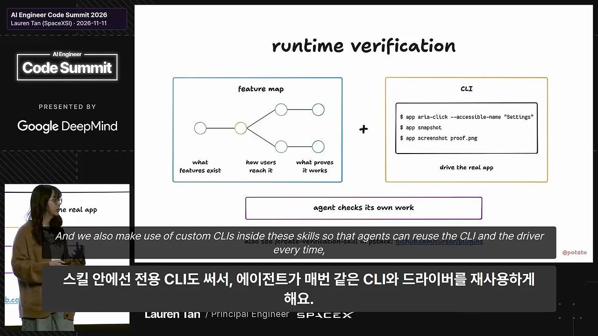
에이전트가 PR 대부분을 스스로 병합한다면 사람은 무엇을 볼까요? 내레이터가 정리한 화면이 답이에요. 사람이 보는 건 코드가 아니라 검증의 증거예요. 영상, 스크린샷, 다이어그램, 형식 검증 결과요.
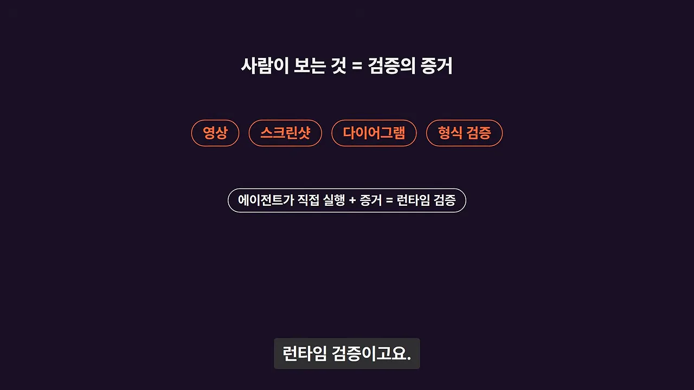
형식 검증과 속성 기반 테스트
팀은 최근 형식 검증도 쓰기 시작했어요. 슬라이드 왼쪽 말풍선이 두 도구를 한 줄씩 소개해요. TLA(Temporal Logic of Actions)+는 '상태 기계를 모델로 적고, 모든 상태를 확인해 규칙이 지켜지는지 본다', Lean은 '코드에 대한 증명을 쓰고, 논리 단계를 하나하나 확인한다'예요. 오른쪽 상자에는 팀이 각각 어디에 쓰는지가 적혀 있어요.
| 도구 | 방식 | 팀이 쓴 곳 |
|---|---|---|
| TLA+ | 모델 체킹 | 여러 기기와 플랫폼에 걸친 알림 같은 주요 사용자 흐름 |
| Lean | 증명 | 직접 만든 가상화 라이브러리에 깜빡임이나 떨림이 없는지 |
| Bombadil | UI(User Interface) 속성 기반 테스트 | UI 버그 찾기 (막 시작) |
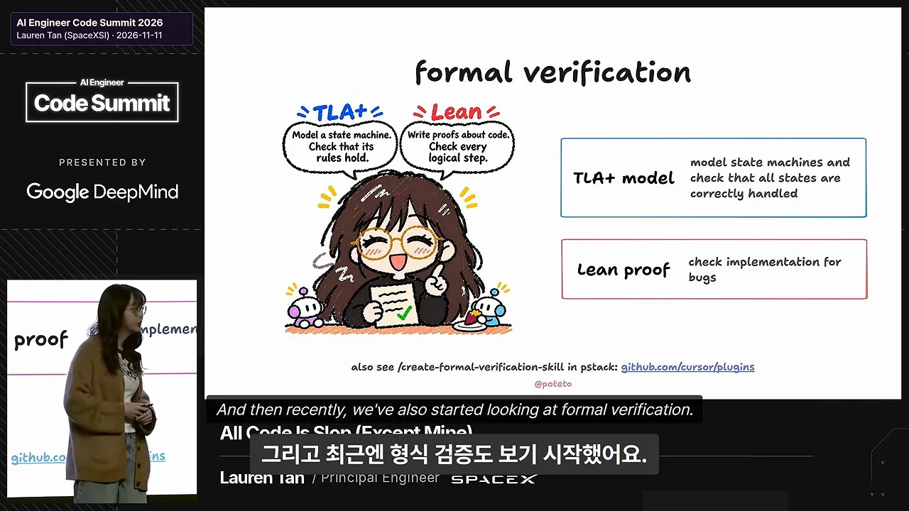
형식 검증으로 이미 버그를 꽤 찾았대요. 하지만 발표자는 선을 분명히 그어요. 만능 해결책이 아니고, 에이전트 환경에 층을 하나 더 쌓은 거라고요. 아직 실험 중이라는 말도 덧붙여요.
UI 쪽은 Bombadil이라는 라이브러리로 속성 기반 테스트를 막 시작했어요. 화면에는 테스트가 앱의 여러 화면을 빠르게 오가는 짧은 영상이 지나가요. 이것도 UI 버그를 몇 개 잡았대요.
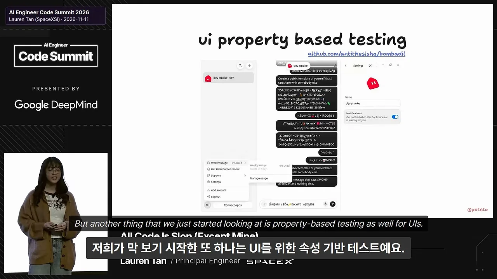
하루 토큰의 70%가 검증으로
여기서 발표자는 신디 스리다란의 트윗 두 장을 보여 줘요. 여섯 달쯤 간격을 둔 글이에요. 첫 장은 5월 15일 트윗이에요. 노란 줄을 보면, 이번 주에만 미묘한 버그가 있는 AI 생성 PR 여러 개가 병합돼서 고치는 데 며칠과 많은 수작업 검증이 들었다는 내용이에요. 아래에는 '고치는 데 든 노력을 생각하면 속도는 오르지 않았다'는 문장이 이어져요.
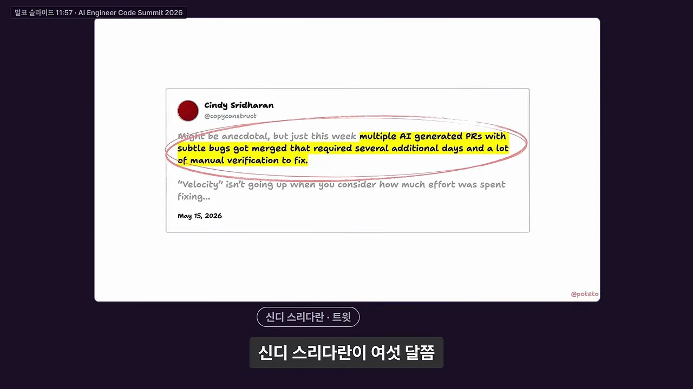
두 번째 장은 11월 5일 트윗이에요. 노란 줄 두 개가 핵심이에요. 여섯 달 전 내 환경에 빠져 있던 건 지금 쓰는 검증 과정이었고, 하루 토큰의 70%를 패치 검증에, 20~30%만 패치 생성에 쓴다는 내용이에요.
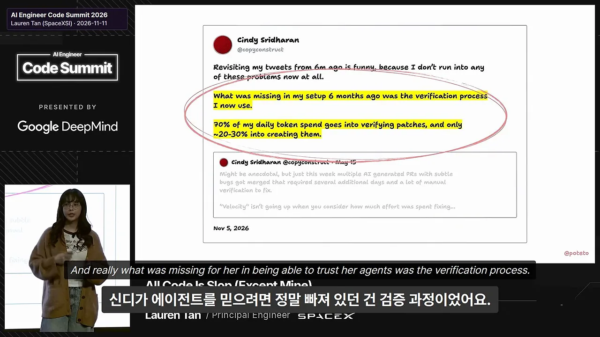
발표자도 자기 토큰 대부분이 검증에 쓰인다고 해요. 그리고 신디가 정리한 테스트 목록을 보여 줘요. 왼쪽 보라색 열이 배포 전(단위, 퍼즈, 속성 기반, 형식 검증, 뮤테이션 테스트 등), 나머지 세 열이 배포·릴리스·릴리스 이후의 프로덕션 테스트(카나리, 트래픽 셰이핑, 카오스 테스트, 실사용자 모니터링 등)예요.
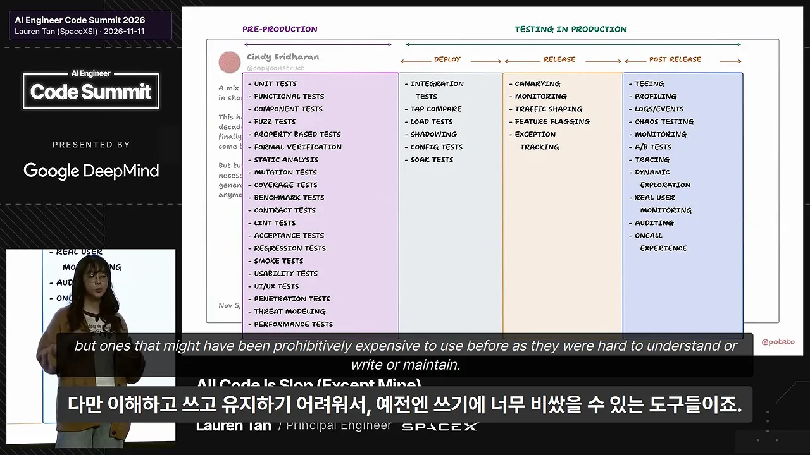
모두 좋은 소프트웨어 엔지니어링 도구지만, 예전엔 이해하고 쓰고 유지하기 어려워서 너무 비쌌어요. 에이전트가 그 비용을 크게 낮췄어요.
we are entering a golden age of software testing and verification
우리는 소프트웨어 테스트와 검증의 황금기에 들어서고 있어요.
— 원래 발표 (이 영상 16:19 부근)
형식 검증은 제품이 어떻게 동작해야 하는지, 에이전트가 의도를 제대로 이해했는지 따져 보는 데도 도움이 돼요. 발표자는 이를 위해 pstack에 statechart라는 스킬을 만들었어요. 상태 기계를 사용자 관점에서 시각화하는 스킬이고, 영상·스크린샷과 나란히 놓고 리뷰하기가 훨씬 쉽대요. 화면에 저장소 주소가 크게 나와요.
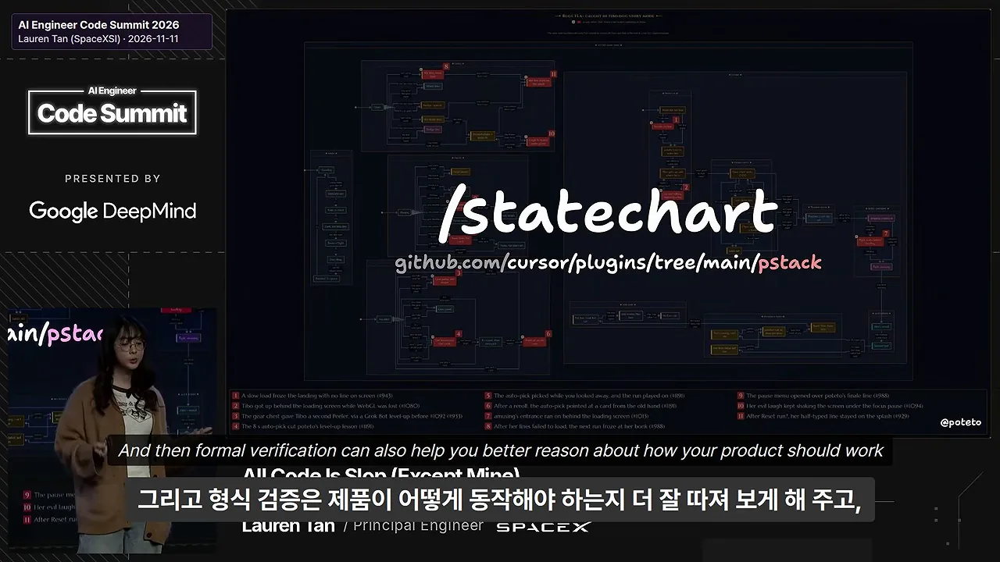
투자의 결과: 팀 숫자
여기까지가 투자예요. 코드베이스를 정리하고, 교정을 린트로 옮기고, 검증을 여러 겹으로 쌓았어요. 그럼 돌려받은 건 뭘까요? 차트가 연달아 나와요. 팀이 병합한 PR 수, 기여한 사람 수, 되돌림 비율, 앱 성능, 데스크톱 앱 릴리스 횟수예요.
PR과 기여자
첫 차트는 영상 맨 앞에 나왔던 그 그래프예요. 6월 809개에서 10월 10,926개로, 넉 달 만에 열세 배 넘게 늘었어요. 발표자는 '터무니없는 11,000개'라고 말해요.
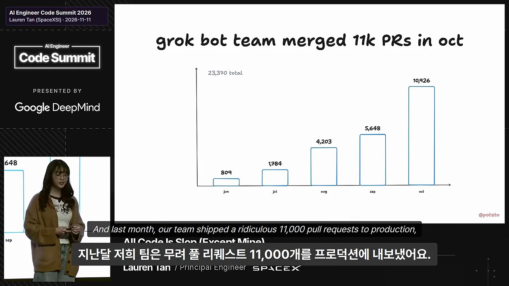
기여자 차트는 막대 하나를 한 사람이 올린 PR 수로 칸을 나눠 색칠했어요. 오른쪽 범례를 보면 진한 파랑이 1,000개 이상, 연한 파랑이 100~999개(둘 다 코어), 흰 칸이 10~99개(캐주얼), 회색이 2~9개, 맨 아래가 1개(둘 다 드라이브바이)예요. 10월 막대는 위에서부터 1, 22, 77, 78, 49명, 합해서 227명이에요. 8월 막대 가운데 점선은 8월 11일 출시 시점이에요.
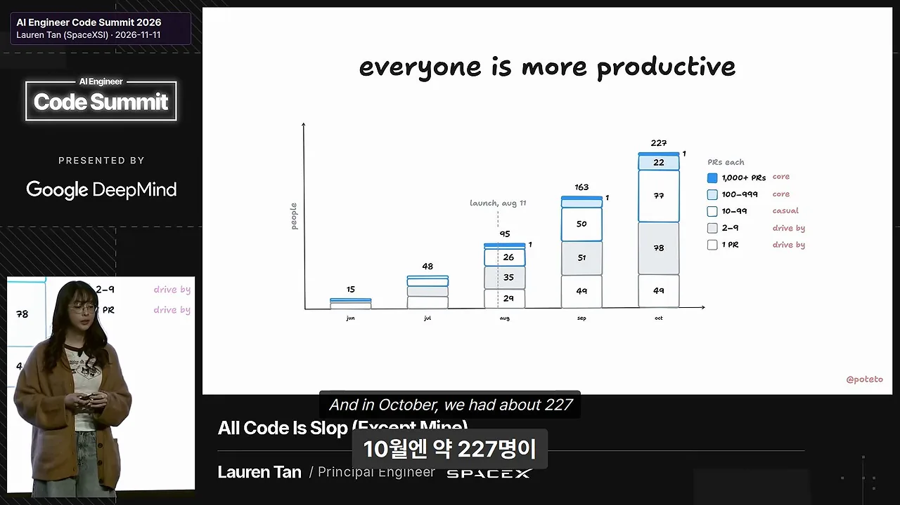
되돌림 비율
이 속도면 '슬롭 덩어리 아니야?'라는 의문이 들죠. 되돌린 커밋 비율은 오히려 내려갔어요. 6월 0.98%, 7월 0.61%에서 8월 이후로는 0.47%, 0.48%, 0.47%로 반 퍼센트 언저리에 머물러요.
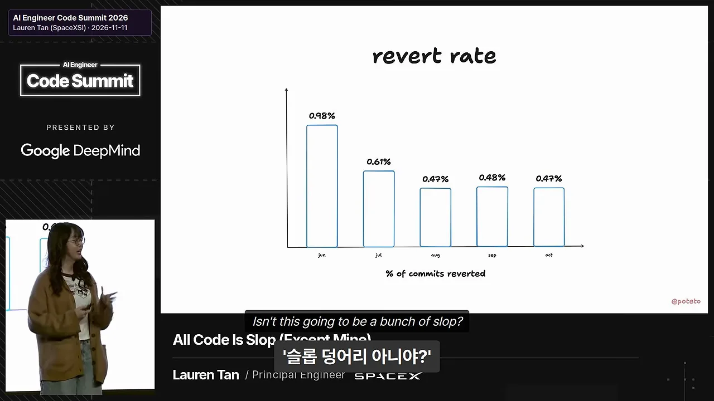
앱 성능
발표자가 가장 흥미롭다고 꼽는 건 성능이에요. 이 속도와 이 정도의 기여자로도 Grok Bot의 성능이 출시 때보다 여러 면에서 좋아졌대요. 슬라이드는 5월(may)과 지금(now)을 다섯 묶음으로 비교해요. 글씨가 작아서 아래 표로 옮겼어요.
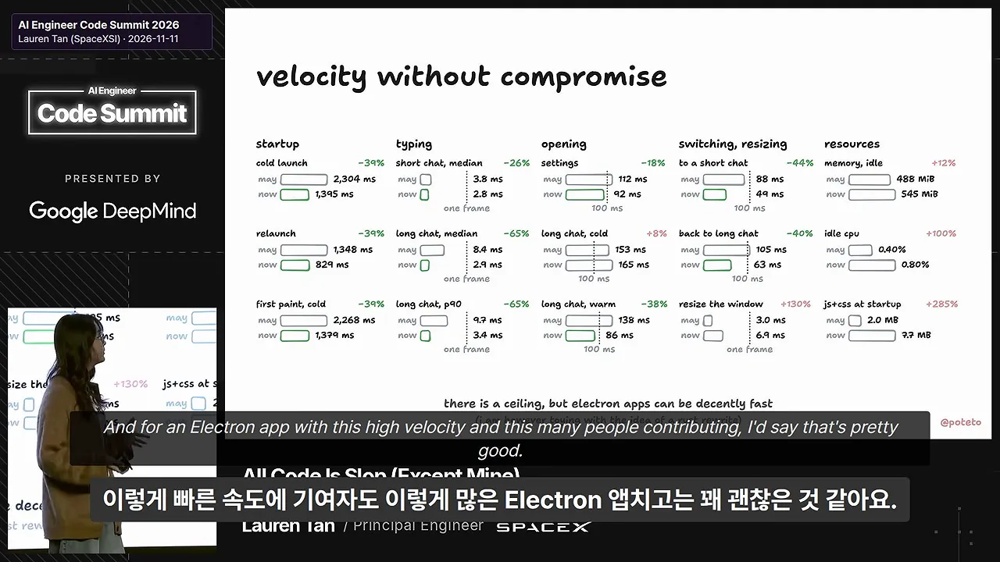
| 묶음 | 항목 | 5월 | 지금 | 변화 |
|---|---|---|---|---|
| 시작 | 콜드 실행 | 2,304ms | 1,395ms | -39% |
| 재실행 | 1,348ms | 829ms | -39% | |
| 첫 화면 그리기(콜드) | 2,268ms | 1,379ms | -39% | |
| 타이핑 | 짧은 채팅, 중앙값 | 3.8ms | 2.8ms | -26% |
| 긴 채팅, 중앙값 | 8.4ms | 2.9ms | -65% | |
| 긴 채팅, p90 | 9.7ms | 3.4ms | -65% | |
| 열기 | 설정 | 112ms | 92ms | -18% |
| 긴 채팅(콜드) | 153ms | 165ms | +8% | |
| 긴 채팅(웜) | 138ms | 86ms | -38% | |
| 전환·크기 조절 | 짧은 채팅으로 | 88ms | 49ms | -44% |
| 긴 채팅으로 돌아가기 | 105ms | 63ms | -40% | |
| 창 크기 조절 | 3.0ms | 6.9ms | +130% | |
| 자원 | 유휴 메모리 | 488MiB | 545MiB | +12% |
| 유휴 CPU(Central Processing Unit) | 0.40% | 0.80% | +100% | |
| 시작 시 JS(JavaScript)·CSS(Cascading Style Sheets) | 2.0MB | 7.7MB | +285% |
체감에 닿는 시작·타이핑·전환은 대부분 빨라졌고, 자원 사용과 몇몇 항목은 늘었어요. 발표자는 말로는 '시작, 타이핑, 새 채팅 열기, 채팅 전환이 모두 빨라졌다'고만 해요. 표 아래에는 'Electron 앱에는 천장이 있지만 꽤 빠를 수 있다'는 문장과, 작은 글씨로 'Rust로 다시 쓰는 것도 생각 중'이라는 말이 있어요.
릴리스 횟수
발표자는 말로 '안정 버전을 하루에 한 번쯤 낸다'고 했어요. 슬라이드의 데스크톱 앱 릴리스는 8월(출시 후) 7회, 9월 19회, 10월 15회예요. 아래 줄의 릴리스 간격 중앙값은 44시간, 25시간, 28시간이에요.
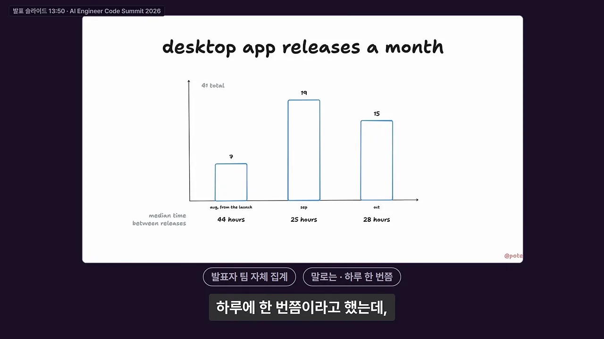
내레이터는 이 숫자들이 발표에서 팀이 직접 제시한 값이라 따로 확인할 수 있는 자료가 없었다고 밝혀요. 이 정리도 같은 이유로 슬라이드 값을 그대로 옮겼어요.
공장보다 기초가 먼저
이 결과를 보고 자동화부터 시작하면 될까요? 발표자의 답은 순서에 관한 거예요. 소프트웨어 공장을 짓고 할 수 있는 건 다 자동화하기 전에, 에이전트를 고칠 때마다 코드베이스부터 고치래요. 새 안티패턴은 린트 규칙으로 먼저 막고, 옛 패턴은 그다음에 치워요. 그리고 검증 체계를 정말 탄탄하게 만들어요. 이런 작업 대부분은 어차피 자동화의 전제 조건이에요.
슬라이드 제목이 'don't automate a bad loop'예요. 맨 처음의 두 고리가 다시 나오고, 오른쪽 고리 밑에는 이번엔 'after the poteto pyramid'라고 적혀 있어요. 아래 내레이터 라벨 두 개가 순서를 요약해요. ① 새 안티패턴은 린트로 먼저, ② 옛것은 그다음 청소예요.
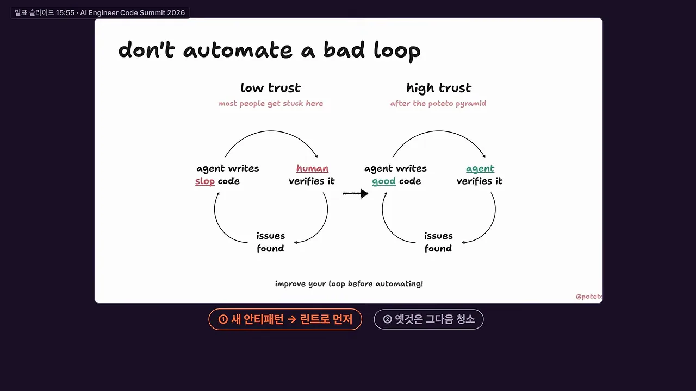
if your inner coding loop produces slop, then automating that loop just produces more slop
코드를 쓰는 안쪽 루프가 슬롭을 내면, 그 루프를 자동화해도 슬롭만 더 나와요.
— 원래 발표 (이 영상 20:42 부근)
그러면 문제에 토큰을 계속 더 쏟아부어야 하고, 그건 아주 비싸요. 반대로 코드베이스, 정적 분석, 런타임·형식 검증에 투자해 두면 그 위에서 많은 게 가능해지고, 자기만의 공장도 쉽게 지을 수 있대요.
Grok Bot을 바깥 루프로
여기서부터는 발표자 팀의 제품 이야기예요. 발표자는 Grok Bot을 바깥 루프로 쓰라고 권해요. 슬라이드 왼쪽 목록이 바깥 루프를 깨우는 신호예요. X 피드백, Linear 티켓 생성, 새 Slack 메시지, 크론 일정, Datadog·Sentry 알림 같은 것들이요. 신호가 들어오면 가운데 검은 공, 팀 모두가 쓰는 공용 봇이 안쪽 루프(에이전트가 좋은 코드를 쓰고 에이전트가 검증)를 돌려요.
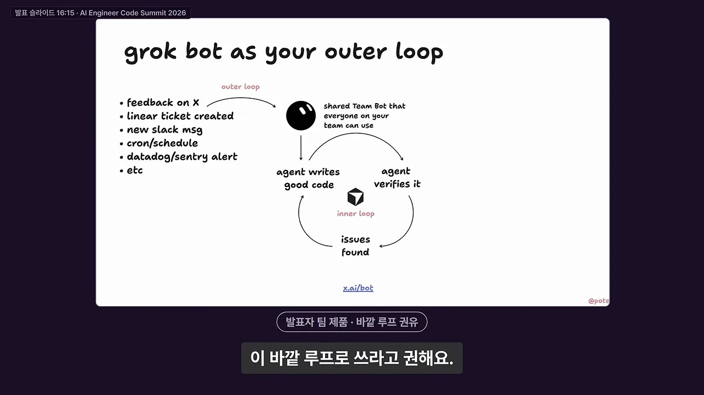
예시가 하나 나와요. 새 릴리스를 낼 때마다 Grok Bot이 Cursor 프로젝트를 띄워 앱과 빌드 전체를 퍼징해요. 실제 사용자처럼 앱을 쓰면서 버그를 찾고, 버그마다 수정 PR을 열고, 자동으로 병합해요. 화면의 Slack 스레드가 그 결과 보고예요. 중복 두 쌍을 합치니 버그가 50개였고, 새 버그 3개(높음 0, 중간 2, 낮음 1), 기존 버그 47개(높음 1, 중간 9, 낮음 37)였어요. 버그마다 이 스레드에 답글이 따로 달린다고 적혀 있어요.
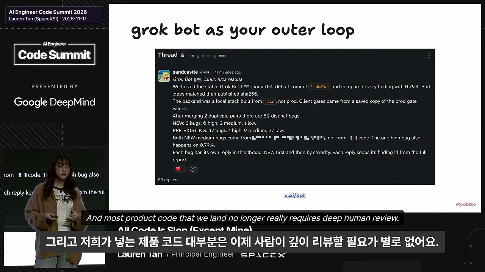
발표자는 이게 가능한 이유를 코드베이스에서 찾아요. 코드베이스가 충분히 좋아서 PR이 기본적으로 좋게 나오고, 팀이 넣는 제품 코드 대부분은 더 이상 사람이 깊이 리뷰할 필요가 없대요. 발표는 마지막 슬라이드에서 '모든 코드는 슬롭이다(내 것만 빼고)'의 괄호를 '(여러분 것만 빼고)'로 바꾸며 끝나요.
내 코드베이스에 넣어 볼 세 가지
내레이터는 오늘 당장 해 볼 수 있는 일을 세 줄로 정리해요. 화면의 화분 옆 목록이에요.
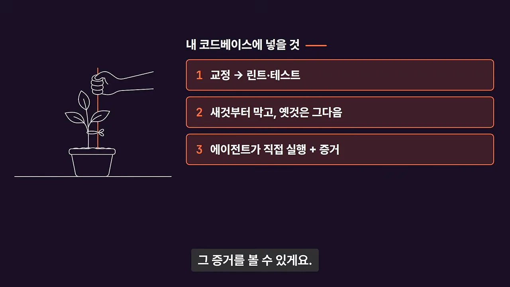
- 교정을 린트·테스트로 — 에이전트가 같은 실수를 해서 또 고쳐 줬다면, 규칙 파일에 한 줄 보태기 전에 린트 규칙이나 테스트로 만들 수 있는지 먼저 봐요.
- 새것부터 막고, 옛것은 그다음 — 새로 생기는 위반을 먼저 막고, 이미 있는 건 그다음에 지워요.
- 에이전트가 직접 실행하고 증거 남기기 — 스크린샷이든 테스트 출력이든, 사람이 코드 대신 증거를 볼 수 있게 확인 방법을 하나 열어 줘요.
발표 전체를 피라미드 칸별로 다시 놓으면 아래 그림이 돼요. 칸마다 팀이 실제로 넣은 장치만 적었어요.
내레이터는 선도 하나 그어요. 주석을 거의 다 없애는 일이나 PR 자동 병합은 다른 이야기라고요. 발표자도 PR 수천 개를 올리기까지 여섯 달이 걸렸고, 팀의 숫자는 그 팀의 코드베이스에서 나온 거예요. 그러니 피라미드의 맨 윗칸부터 한 가지씩 옮겨 보면 된대요.